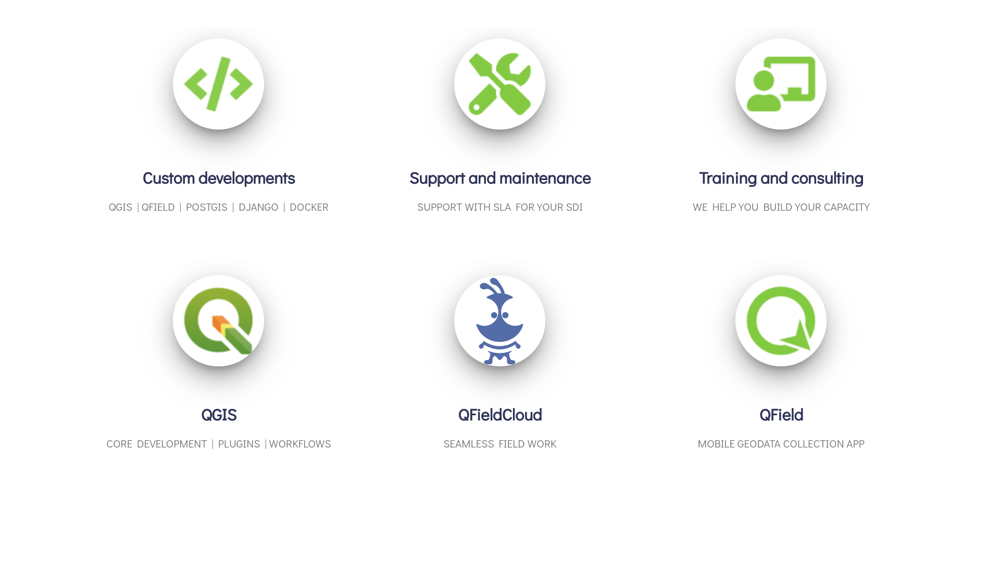
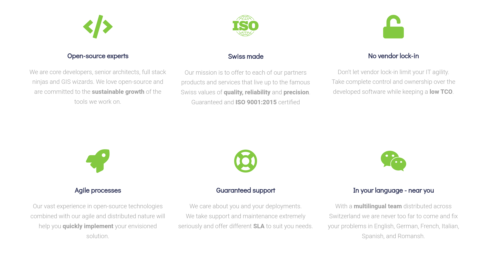
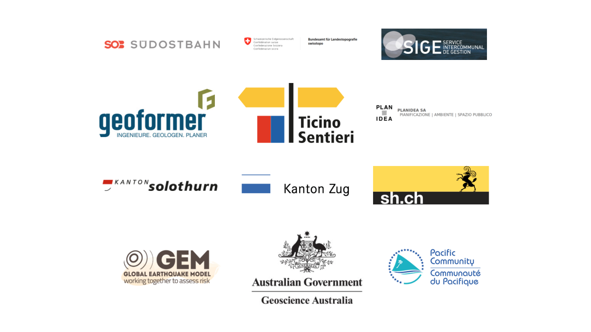

- QGIS → Core developers, QGIS.org chair, QGIS.ch president
- QGIS Plugins → Core developers and mantainers of many plugins
Swisslocator, S[o|h]Locator, Model baker, QFieldSync, Teksi wastewater, Document Management System, Linking Relation Editor, Autocurve, ...
- QField (mobile QGIS) → Creators and maintainers
- PostGIS → Experts
- GeoData Infrastructure → Planning and deployment experts
- Interlis → contributors


- Confederation: Swisstopo, BAFU, BABS, BAK
- Cantons: SH, SO, TI, ZG, GR, JU, VD, NE, SZ
- Cities: Bern, Lausanne, Thalwil, Pully, Vevey, Neuchatel, Strasbourg, ...
- Institutions: UN, GIZ, SIGE, ibW, OST, Uni Bern, BIZ-GEO …
- Private sector: DB, SOB, SINEF, OPAN ...
- International: Geoscience Australia, World Bank, ...